PC 127 Inclusion in Education
Diversity, disability, social justice and inclusive pedagogy: transforming schools so that every learner belongs and learns
Contents
About this course
Inclusive education means that all learners, whatever their abilities, gender, ethnicity, religion, language or socio-economic background, learn together in regular schools that are organised to respond to their diverse needs. This course focuses particularly on children with disabilities (CWDs) and learners with special educational needs (SEN) in Bangladesh. It examines human diversity and its strengths, the social justice basis of inclusion, the international and national legal and policy framework, approaches to educating children with SEN, inclusive pedagogy and classroom management, and the transformation of whole schools through Inclusive Learning-Friendly Environments, accessibility, technology, collaboration and partnership with parents and communities, including inclusion in emergencies.
Course objectives
Explain the concepts of diversity, disability, equality, equity, inclusion and social justice.
Analyse the international and Bangladeshi legal and policy framework for inclusive education.
Identify children with SEN and compare educational approaches and placement options.
Apply inclusive pedagogy, assistive technology, communication and classroom management strategies.
Plan whole-school transformation using ILFE and the four indicators of inclusion.
Each unit follows the official syllabus order. Read the narrative first, then the Key point boxes, then test yourself with the Exam focus questions.
Golden boxes = must-remember ideas. Teal boxes = definitions and study tips. Green boxes = Bangladesh context.
The final chapter is a question bank (MCQs with answers, short and broad questions) in the style of university examinations, followed by full references in APA 7th style.
Statistics on enrolment, budgets and policies change every year. Before an exam, check the latest BANBEIS, DPE, UGC and UNESCO figures.
Unit 1: Introduction to Human Diversity and its Strength
Chapter summary
Diversity refers to the variety of differences among people: in ability, gender, age, ethnicity, race, language, religion, culture, socio-economic status, sexual orientation, geographic location and life experience. Every classroom is diverse; no two learners learn in exactly the same way.
This chapter covers: Human diversity; Disability: concept and models; The strength and the challenge of disability; The three Rs of diversity: Recognize, Respect, Respond; Perspectives of diversity and inclusion.
Key terms:
- Persons with disabilities (UN CRPD, 2006, Article 1) : "Persons with disabilities include those who have long-term physical, mental, intellectual or sensory impairments which in interaction with various barriers may hinder their full and effective participation in society on an…
Key points to remember:
- Diversity is a strength , not a problem to be fixed.
What the curriculum saysUnit 1: Introduction to Human Diversity and its Strength · 4 contact hours
At the end of this unit learners will be able to
- interpret the concept of diverse ability, disability, diversity, equality, equity and social justice
- outline various aspects related to disability, diversity and inclusion
- Concept and Strength of Disability and Human Diversity, challenge of disability
- The 3 (Three) Rs of Diversity: Recognize, Respect, and Respond; and its implication for
- Perspectives of Diversity and Inclusion: Diverse ability, Disability, , Gender, Ethnicity, Race, Religious faith, socio-economic status
1.1 Human diversity
Diversity refers to the variety of differences among people: in ability, gender, age, ethnicity, race, language, religion, culture, socio-economic status, sexual orientation, geographic location and life experience. Every classroom is diverse; no two learners learn in exactly the same way.
Diversity is a strength, not a problem to be fixed. Diverse classrooms expose learners to multiple perspectives, foster empathy and social skills, prepare citizens for a plural society, and push teachers to adopt better teaching that benefits everyone (UNESCO, 2020).
1.2 Disability: concept and models
Persons with disabilities (UN CRPD, 2006, Article 1): "Persons with disabilities include those who have long-term physical, mental, intellectual or sensory impairments which in interaction with various barriers may hinder their full and effective participation in society on an equal basis with others."
The WHO's International Classification of Functioning, Disability and Health (ICF, 2001) distinguishes impairment (a problem in body function or structure), activity limitation (difficulty executing a task) and participation restriction (difficulty in life situations), all influenced by environmental and personal factors.
| Model | View of disability | Response | Implication for education |
|---|---|---|---|
| Charity / moral model | Object of pity, misfortune or punishment | Charity, welfare | Segregated care; low expectations |
| Medical (individual) model | A defect or illness located in the individual | Diagnose, treat, cure, "normalise" the person | Special schools; focus on deficits |
| Social model (Oliver, 1983, 1990) | Disability is created by barriers in society: physical, attitudinal, communication, institutional | Remove barriers | Change schools, not children: inclusive education |
| Rights-based model (UN CRPD) | Persons with disabilities are rights-holders | Ensure rights, equality and non-discrimination | Inclusive education is a right; reasonable accommodation |
| Biopsychosocial (ICF) model | Interaction of health condition, body, activity, participation, environment | Holistic support | Individual support plus environmental change |
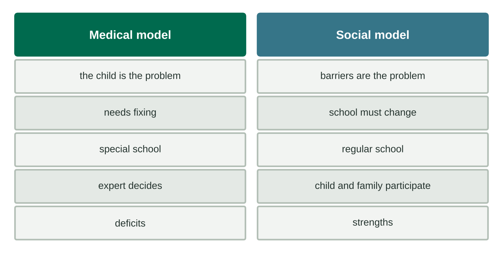
Figure 1. From the medical model to the social model of disability
1.3 The strength and the challenge of disability
Strengths: people with disabilities bring diverse perspectives, resilience, creativity and problem-solving; many communities of disabled people (e.g., the Deaf community with its own sign language) have rich cultures. Inclusion benefits all learners by promoting empathy, cooperation and flexible teaching.
Challenges: stigma and negative attitudes, poverty (disability and poverty reinforce each other), inaccessible buildings and transport, lack of assistive devices, untrained teachers, rigid curricula and examinations, and lack of data.
About 1.3 billion people (16% of the world population) live with significant disability (WHO, 2022), and UNICEF (2021) estimates almost 240 million children with disabilities worldwide. Bangladesh's National Survey on Persons with Disabilities 2021 (BBS) reported a prevalence of about 2.8%, with lower school participation among children with disabilities. Check the latest BBS and DSS data before using figures in teaching.
1.4 The three Rs of diversity: Recognize, Respect, Respond
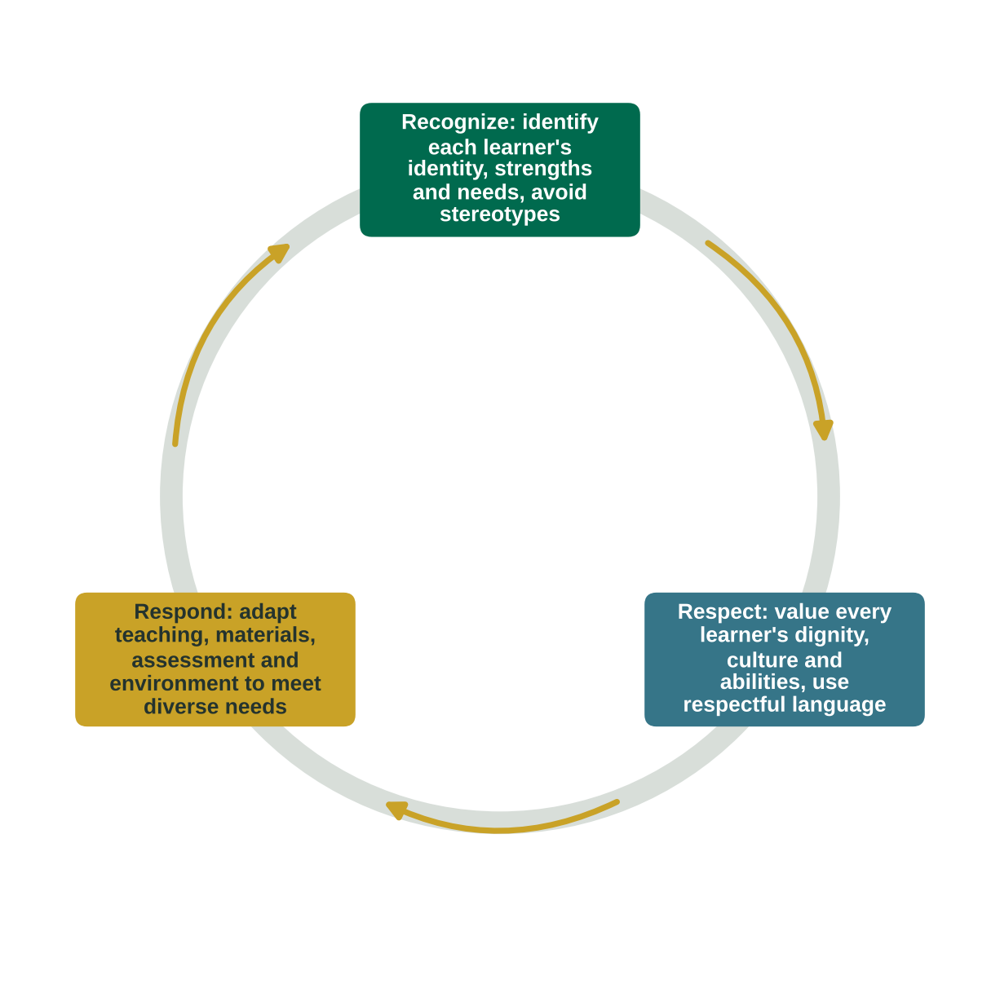
Figure 2. The 3 Rs of diversity and their implications for educating children with disabilities
| R | Meaning | Implication for CWDs |
|---|---|---|
| Recognize | Acknowledge that differences exist and identify learners' strengths, needs and barriers | Early identification and functional assessment; know each child's learning profile |
| Respect | Accept and value differences; treat all with dignity | Person-first or identity-first language as preferred ("a child with visual impairment"); zero tolerance of bullying; high expectations |
| Respond | Take action to meet diverse needs | Differentiated instruction, Universal Design for Learning, assistive devices, reasonable accommodation, individualised education plans |
1.5 Perspectives of diversity and inclusion
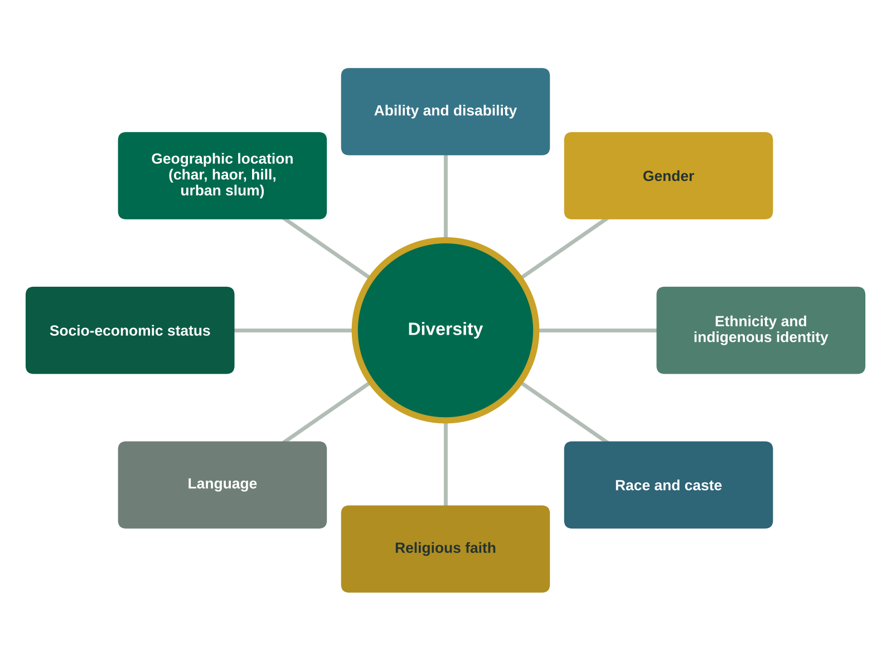
Figure 3. Dimensions of diversity in the classroom
| Dimension | Bangladesh context and inclusive response |
|---|---|
| Diverse ability / disability | Children with visual, hearing, physical, intellectual, autism spectrum, learning and multiple disabilities; respond with accessible teaching and support |
| Gender | Gender parity in enrolment has been achieved at primary and secondary levels, but girls face early marriage, safety issues and harassment; boys face dropout for work; gender-responsive pedagogy (see PC 122) |
| Ethnicity | Over 50 ethnic communities (e.g., Chakma, Marma, Santal, Garo) with their own languages; mother-tongue-based multilingual education pre-primary materials in several languages |
| Race and caste | Dalit and Harijan communities face discrimination; anti-discrimination measures needed |
| Religious faith | Muslim majority with Hindu, Buddhist, Christian and other minorities; religious education choices; respect for festivals and practices |
| Socio-economic status | Poverty, child labour, street children and urban slums; stipends, school feeding, flexible schedules |
Key concepts:
Equality: everyone receives the same resources or treatment.
Equity: everyone receives what they need to achieve fair outcomes; unequal inputs for equal opportunities.
Inclusion: changing systems so that all learners participate and learn together.
Social justice: the fair distribution of resources, opportunities and recognition in society.
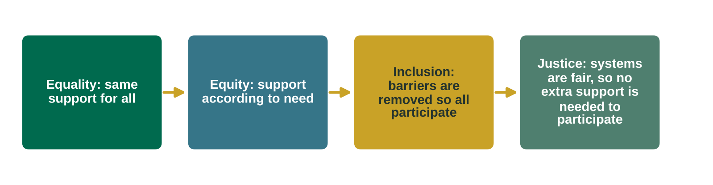
Figure 4. From equality to justice
Likely questions: "Explain the social model of disability and its implications for education." "What are the 3 Rs of diversity? Show their implications for educating CWDs." "Distinguish between equality and equity."
Unit 2: Inclusion from the Perspective of Social Justice
Chapter summary
Ainscow (2005) identifies four elements of inclusion: (1) it is a process , a never-ending search for better ways of responding to diversity; (2) it is concerned with the identification and removal of barriers ; (3) it is about the presence, participation and achievement of all students; and (4) it places particular emphasis on learner…
This chapter covers: Conceptualising inclusion; Social justice framework for equity, equality and inclusion; International legal and policy framework; Bangladesh's legal and policy framework.
Key terms:
- Inclusive education (UNESCO, 2009) : "Inclusive education is a process of strengthening the capacity of the education system to reach out to all learners… An 'inclusive' education system can only be created if ordinary schools become more inclusive — in…
- Inclusion (UNESCO, 2005) : "A process of addressing and responding to the diversity of needs of all learners through increasing participation in learning, cultures and communities, and reducing exclusion within and from education."
What the curriculum saysUnit 2: Inclusion from the perspective of Social Justice · 6 contact hours
At the end of this unit learners will be able to
- understand the relationship between Inclusion and Social Justice
- illustrate legal and Policy Framework for inclusive education ensuring equitable quality education for all including CWDs
- Conceptualizing Inclusion
- Social Justice Framework for ensuring Equity, Equality and Inclusion
- Legislative and Policy framework for inclusive education
- National Education Policy 2010
- Salamanca Declaration 1994
- UNCRPD 2006
- Bangladesh Peoples with Disabilities Rights and Protection Act 2013
- Neuro-Developmental Disability Trust Act 2013
- Gender Policy, 2013
- Nonformal Education Act, 2014
- Integrated Special Education Regulation 2018
2.1 Conceptualising inclusion
Inclusive education (UNESCO, 2009): "Inclusive education is a process of strengthening the capacity of the education system to reach out to all learners… An 'inclusive' education system can only be created if ordinary schools become more inclusive — in other words, if they become better at educating all children in their communities."
Inclusion (UNESCO, 2005): "A process of addressing and responding to the diversity of needs of all learners through increasing participation in learning, cultures and communities, and reducing exclusion within and from education."
Ainscow (2005) identifies four elements of inclusion: (1) it is a process, a never-ending search for better ways of responding to diversity; (2) it is concerned with the identification and removal of barriers; (3) it is about the presence, participation and achievement of all students; and (4) it places particular emphasis on learner groups at risk of marginalisation, exclusion or underachievement.
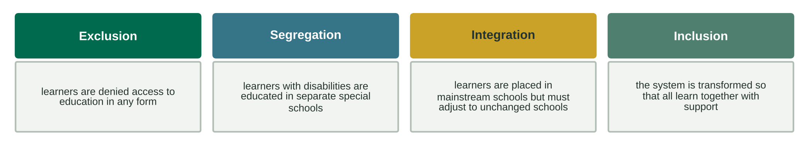
Figure 5. Exclusion, segregation, integration and inclusion (UN CRPD General Comment No. 4, 2016)
Booth and Ainscow's Index for Inclusion (2002)
The Index guides school self-review in three dimensions: creating inclusive cultures (building community, establishing inclusive values), producing inclusive policies (developing a school for all, organising support for diversity) and evolving inclusive practices (orchestrating learning, mobilising resources).
2.2 Social justice framework for equity, equality and inclusion
Social justice in education means that every learner has a fair chance to access, participate in and benefit from quality education.
| Theorist | Idea | Relevance to inclusion |
|---|---|---|
| John Rawls (A Theory of Justice, 1971) | Justice as fairness; the difference principle: inequalities are acceptable only if they benefit the least advantaged; the "veil of ignorance" | Allocate more resources to disadvantaged learners, including CWDs |
| Amartya Sen (The Idea of Justice, 2009; capability approach) | Justice is about expanding people's capabilities, their real freedoms to be and do what they value | Education should develop each learner's capabilities; disability limits conversion of resources into capabilities, so more support is needed |
| Martha Nussbaum (2006) | List of central human capabilities; extends justice to people with disabilities | Dignity and full participation |
| Nancy Fraser (1997, 2008) | Three dimensions of justice: redistribution (economic), recognition (cultural respect), representation (political voice) | Inclusion needs resources, respect for identity, and the voice of disabled people ("Nothing about us without us") |
| Paulo Freire (1970) | Critical pedagogy; education for liberation of the oppressed | Challenge structures that marginalise learners |
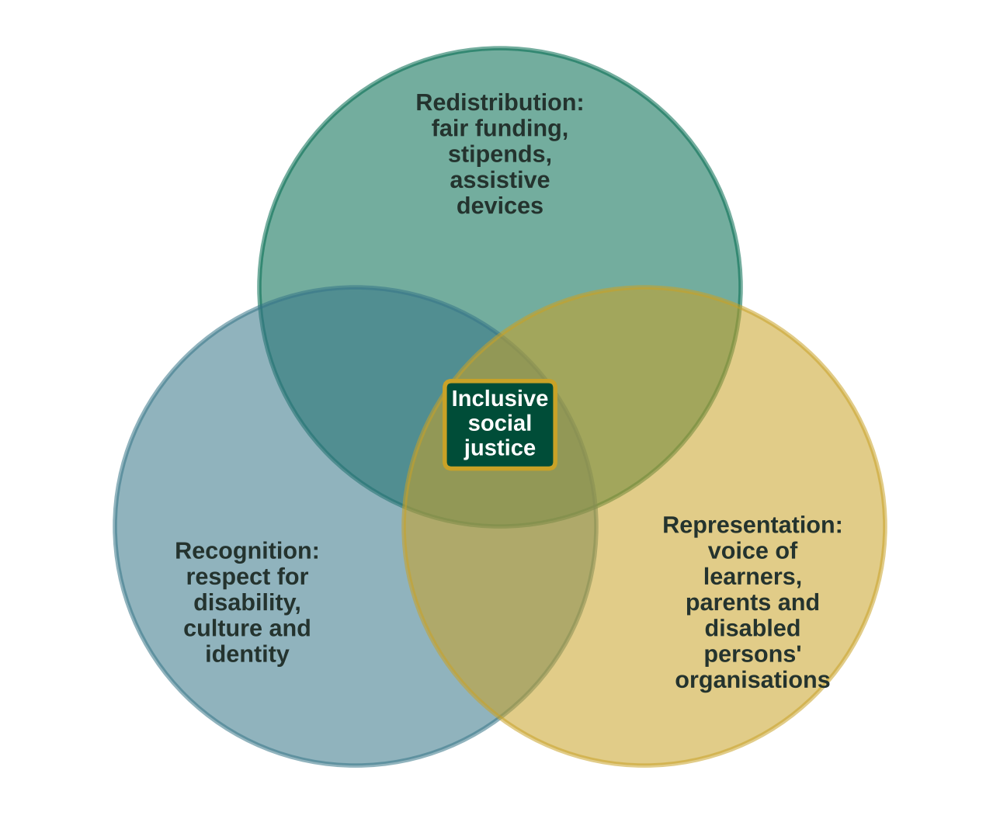
Figure 6. Fraser's three dimensions of social justice applied to inclusive education
2.3 International legal and policy framework
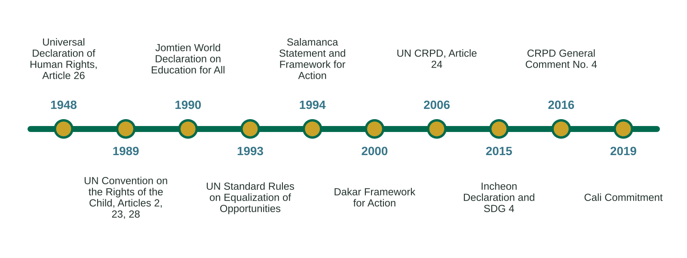
Figure 7. Key international milestones towards inclusive education
Salamanca Statement and Framework for Action (1994)
Adopted at the World Conference on Special Needs Education: Access and Quality, Salamanca, Spain (7–10 June 1994), by representatives of 92 governments and 25 international organisations, organised by UNESCO and the Government of Spain.
Every child has a fundamental right to education and unique characteristics, interests, abilities and learning needs.
Education systems should be designed to take into account the wide diversity of these characteristics and needs.
Those with special educational needs must have access to regular schools, which should accommodate them within a child-centred pedagogy.
UN Convention on the Rights of Persons with Disabilities (CRPD, 2006)
Adopted by the UN General Assembly on 13 December 2006; entered into force in 2008. Bangladesh ratified it in 2007, among the early ratifying states. Its principles (Article 3) include respect for inherent dignity, non-discrimination, full participation, respect for difference, equality of opportunity, accessibility, gender equality and respect for the evolving capacities of children.
Article 24 (Education): States Parties shall ensure an inclusive education system at all levels and lifelong learning; persons with disabilities are not excluded from the general education system on the basis of disability; children can access inclusive, quality, free primary and secondary education in their communities; reasonable accommodation of individual requirements is provided; effective individualised support measures are provided; learning of Braille, sign language and alternative communication is facilitated; teachers, including teachers with disabilities, are trained.
General Comment No. 4 (2016) clarified that inclusion requires systemic reform and that placing students in mainstream classes without structural changes is integration, not inclusion.
SDG 4 (2015)
"Ensure inclusive and equitable quality education and promote lifelong learning opportunities for all." Target 4.5 calls for eliminating gender disparities and ensuring equal access at all levels for the vulnerable, including persons with disabilities, indigenous peoples and children in vulnerable situations. Target 4.a calls for disability- and gender-sensitive, safe, inclusive learning environments.
2.4 Bangladesh's legal and policy framework
The Constitution of Bangladesh (1972) provides for uniform, mass-oriented and universal education (Article 17), equality before the law (Article 27), non-discrimination with permission for special provisions for any backward section of citizens (Article 28) and equality of opportunity (Article 29).
| Law or policy | Key provisions for inclusive education |
|---|---|
| National Education Policy 2010 | Commits to education for all children irrespective of disability, gender, ethnicity and socio-economic status; calls for identifying CWDs, admission to mainstream schools where possible, special care and facilities, accessible infrastructure (ramps, toilets), teacher training in special needs, and special schools for those who need them; mother-tongue education for ethnic minorities |
| Salamanca Statement 1994 | Bangladesh is a signatory; it shaped the shift from special to inclusive education, reflected in PEDP II onwards |
| UN CRPD 2006 | Ratified in 2007; national laws were revised to align with it, leading to the 2013 Act |
| Rights and Protection of Persons with Disabilities Act 2013 | Replaced the Disability Welfare Act 2001; adopts a rights-based approach; recognises 12 types of disability: autism spectrum disorder, physical, mental illness leading to disability, visual, speech, intellectual, hearing, deaf-blindness, cerebral palsy, Down syndrome, multiple disability and other disabilities; rights to education in mainstream institutions, accessibility, employment, health and participation; no educational institution may refuse admission on the grounds of disability; provision for extra time and support in examinations; identification and registration of persons with disabilities |
| Neuro-Developmental Disability Protection Trust Act 2013 | Establishes a trust to protect and support persons with neuro-developmental disabilities (NDD): autism, Down syndrome, intellectual disability and cerebral palsy; supports education, care, rehabilitation and guardianship |
| Gender policy framework (2013 as listed in the syllabus) | Within the National Women Development Policy 2011 and related gender strategies: equal access of girls and women, including women and girls with disabilities, to education; gender-responsive and safe schools; elimination of discrimination. Check the exact title and provisions used by your department |
| Non-Formal Education Act 2014 | Provides the legal basis for the Bureau of Non-Formal Education and NFE programmes for out-of-school children, dropouts, adolescents and adults, especially disadvantaged groups including persons with disabilities; equivalence and re-entry to formal education (see PC 124) |
| Integrated Special Education Regulation 2018 | Regulates the establishment, recognition, management and support of special and integrated schools for children with disabilities (under the Ministry of Social Welfare), including teacher qualifications and grants. Check the latest version, which has been revised |
Other relevant measures include the Bangladesh National Building Code (accessibility provisions), the disability allowance and education stipend for students with disabilities (Department of Social Services), the Jatiya Protibandhi Unnayan Foundation (JPUF), Protibondhi Sheba O Sahajjo Kendro (disability service centres), and the Bangla Sign Language and Braille initiatives.
Likely questions: "Define inclusive education. Discuss the elements of inclusion according to Ainscow." "Explain inclusion from the perspective of social justice." "Discuss the Salamanca Statement and Article 24 of the UN CRPD." "Describe the legal and policy framework for inclusive education in Bangladesh."
Unit 3: Disability Inclusion
Chapter summary
Special educational needs arise when a child has a learning difficulty or disability that calls for special educational provision. The Salamanca Framework uses SEN broadly to include "all those children and youth whose needs arise from disabilities or learning difficulties" and also gifted children, street and working children, children from remote populations and linguistic, ethnic…
This chapter covers: Children with special educational needs (SEN); Educational approaches for children with SEN; Continuum (cascade) of placement.
Key points to remember:
- Under the CRPD, the goal is a fully inclusive system.
What the curriculum saysUnit 3: Disability Inclusion · 8 contact hours
At the end of this unit learners will be able to
- identify students with disabilities in classroom
- recognize and respond to the educational needs for Children with disabilities
- differentiate among various educational models existed for educating children with disabilities
- Basic concept and characteristics of children with SEN
- Various educational approaches for educating children with SEN
- Special Education
- Integrated Education
- Inclusive Education: Full Inclusion, Partial Inclusion, Reverse Inclusion, Social Inclusion,
3.1 Children with special educational needs (SEN)
Special educational needs arise when a child has a learning difficulty or disability that calls for special educational provision. The Salamanca Framework uses SEN broadly to include "all those children and youth whose needs arise from disabilities or learning difficulties" and also gifted children, street and working children, children from remote populations and linguistic, ethnic or cultural minorities.
| Category | Characteristics a teacher may notice | Key supports |
|---|---|---|
| Visual impairment (blind, low vision) | Holds books close, squints, rubs eyes, difficulty copying from the board, bumps into objects | Braille, large print, magnifiers, seating near board, verbal descriptions, tactile materials, orientation and mobility training |
| Hearing impairment (deaf, hard of hearing) | Does not respond when called, watches lips, speech delay, asks for repetition, inattentiveness | Sign language, hearing aids, front seating, face the class when speaking, visual aids, captions, written instructions |
| Physical disability (including cerebral palsy) | Difficulty in movement, posture, writing or self-care | Ramps, accessible toilets, wheelchairs, adapted furniture and writing tools, extra time |
| Intellectual disability | Slower learning, difficulty with abstract concepts, memory and adaptive skills | Concrete materials, task analysis, repetition, functional curriculum, small steps, positive reinforcement |
| Autism spectrum disorder (ASD) | Difficulties in social communication and interaction; restricted, repetitive behaviours and interests; sensory sensitivities | Structure and routine, visual schedules, social stories, clear and literal language, sensory-friendly spaces |
| Specific learning disabilities (dyslexia, dysgraphia, dyscalculia) | Average or above-average intelligence but persistent difficulty in reading, writing or mathematics | Multisensory phonics, audio texts, extra time, alternative assessment |
| Attention deficit hyperactivity disorder (ADHD) | Inattention, hyperactivity, impulsivity | Short tasks, movement breaks, clear rules, preferential seating, positive behaviour support |
| Speech and language disorders | Articulation, fluency (stuttering) or language difficulties | Patience, speech therapy referral, AAC, opportunities to communicate |
| Emotional and behavioural difficulties | Withdrawal, aggression, anxiety | Positive relationships, counselling, consistent routines |
| Multiple disabilities and deaf-blindness | Combination of impairments | Individualised, highly supported programmes |
| Gifted and talented | Advanced ability, curiosity, rapid learning | Enrichment, acceleration, challenging tasks |
Identification and assessment
Screening by teachers and parents using simple checklists (e.g., vision and hearing screening).
Referral to health or specialist services (Protibondhi Sheba O Sahajjo Kendro, CRP, NITOR, NIMH, CDCs in hospitals).
Functional assessment of the child's strengths and needs in the classroom.
Individualised Education Plan (IEP): present level of performance, annual goals and short-term objectives, services and accommodations, responsibilities and review dates.
Monitoring and review.
3.2 Educational approaches for children with SEN
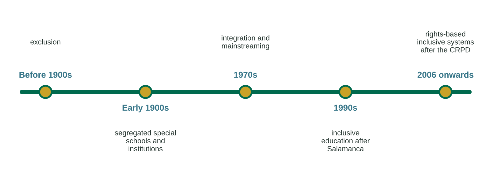
Figure 8. Historical shift in approaches to educating children with disabilities
(a) Special education
Education in separate special schools or institutions designed for one type of disability (e.g., schools for the blind, schools for the deaf, schools for children with intellectual disabilities). In Bangladesh, the Department of Social Services operates government schools for visually and hearing-impaired children and special schools for intellectual disabilities, and many NGOs run special schools.
Advantages: specialist teachers, specialised equipment and methods, small classes.
Limitations: segregation, stigma, limited access (few schools, mainly urban, residential), limited curriculum, poor preparation for life in the community.
(b) Integrated education
Children with disabilities attend regular schools, often with a resource teacher or resource room, but are expected to adapt to the existing system. The Integrated Education Programme for visually impaired children in Bangladesh, which places them in regular secondary schools with resource teachers and hostels, is a well-known example.
Advantages: social contact with peers; less costly than special schools.
Limitations: the school does not change; children may be physically present but not participating ("locational" integration).
(c) Inclusive education
The school changes its culture, policies and practices to welcome and respond to all learners in age-appropriate regular classes in their neighbourhood schools, with necessary support.
| Form | Meaning |
|---|---|
| Full inclusion | The child attends the regular class for the whole school day with support provided in the class |
| Partial inclusion | The child spends part of the day in the regular class and part in a resource room or special class for specialised instruction |
| Reverse inclusion | Children without disabilities join a class or programme designed for children with disabilities (e.g., in a special school), for shared learning and friendship |
| Social inclusion | Children with disabilities participate with peers in non-academic activities: assembly, play, lunch, sports, cultural programmes, clubs |
| Vocational inclusion | Youth with disabilities take part in mainstream technical and vocational education and training and workplaces with accommodations, leading to employment |
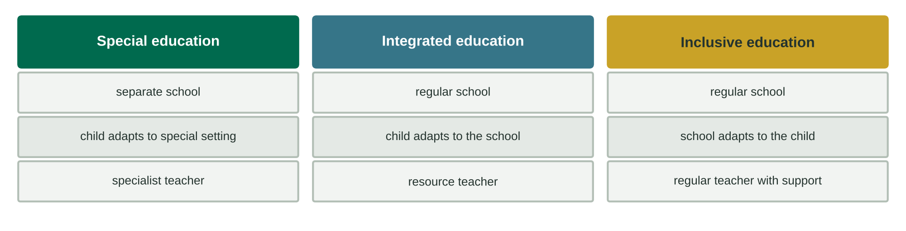
Figure 9. Special, integrated and inclusive education compared
(d) Home-based education
Education delivered at home for children with severe or multiple disabilities, chronic illness or those living where no accessible school exists. Itinerant teachers, community-based rehabilitation (CBR) workers or trained parents provide learning, therapy and daily living skills, with the goal of transition to school where possible. Limitations include isolation from peers and dependence on family capacity.
3.3 Continuum (cascade) of placement
Evelyn Deno (1970) proposed a cascade of services: a range of placements from the most inclusive (most common) to the most restrictive (least common). The principle is that children should be placed in the least restrictive environment and moved towards more inclusive settings as soon as possible.
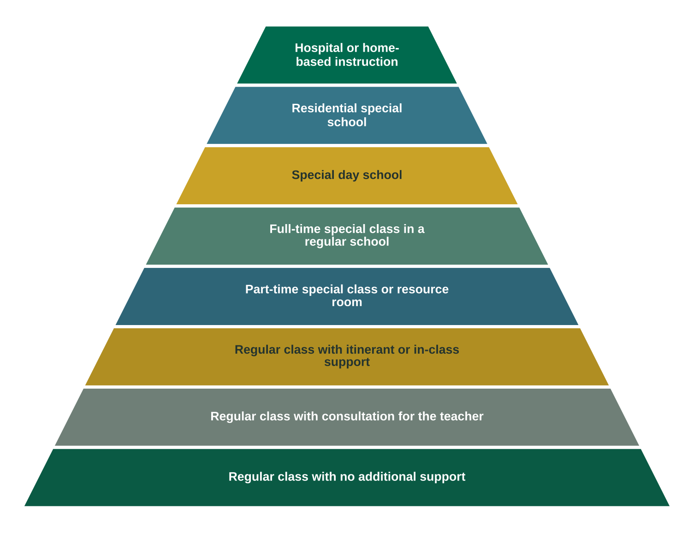
Figure 10. The continuum of placement (after Deno, 1970): from the most restrictive to the most inclusive
Under the CRPD, the goal is a fully inclusive system. The continuum is now seen as a set of supports that can be brought to the child in regular schools, rather than a set of places to which children are sent.
Likely questions: "Who are children with special educational needs? Describe the characteristics of any three types." "Compare special, integrated and inclusive education." "Explain full, partial, reverse, social and vocational inclusion." "What is the continuum of placement?"
Unit 4: Inclusive Pedagogy
Chapter summary
Common challenges in Bangladesh: large classes (often 60 or more students), negative attitudes and low expectations, inadequate pre-service and in-service training, inaccessible buildings and toilets, lack of assistive devices and accessible materials, a rigid, exam-oriented curriculum, limited specialist support, and weak coordination between the education and social welfare ministries.
This chapter covers: Factors and challenges of inclusive classrooms; Inclusive pedagogy; Creating supportive learning environments; Assistive devices for children with SEN; Effective classroom management for inclusive education; Addressing teacher burnout; Classroom communication strategies for educating CWDs.
What the curriculum saysUnit 4: Inclusive Pedagogy · 12 contact hours
At the end of this unit learners will be able to
- identify the factors and challenges of inclusive classroom
- recognize and construct teaching-leaening strategies for different types of children with SEN
- outline strategies for Creating Inclusive Learning Friendly Environment (ILFE) in classroom
- apply various strategies and techniques related to inclusive pedagogy in the classroom
- demonstrate basic skills and attitudes for creating ILFE
- identify strategies for effective transformation of the schools
- outline effective strategies for implementing inclusive education in the schools
- apply and adapt the four indicators of Inclusion (Access, Acceptance, Active participation and Achievement)
- recognize various Government and non-Government initiatives regarding IE in Bangladesh
- describe the basics of Inclusion in emergency
- Factors and challenges of inclusive classroom for Children with special needs
- Creating supportive learning environments
- Orientation with various assistive devices required for educating Children with SEN in the
- Effective Classroom Management Practices for Inclusive Education
- Addressing teacher’s burnout for managing inclusive classroom
- Different classroom communication strategies required for educating CWDs Unit Five: Transforming Schools for Inclusive Education 10
- Creating Inclusive Learning Friendly Environment (ILFE): Settings and Strategies
- Accessibility for Diverse Learners: Getting school buildings right
- Strategies for using technology to support inclusion
- Collaborative strategies for effective inclusion
- Four indicators of Inclusion (Access, Acceptance, Active participation and Achievement)
- Involving parents & community for transforming school
- Government (i.e. PEDP, TQI, SESIP, ROSC) and non-Government initiatives regarding IE in
- Inclusion in emergency
4.1 Factors and challenges of inclusive classrooms
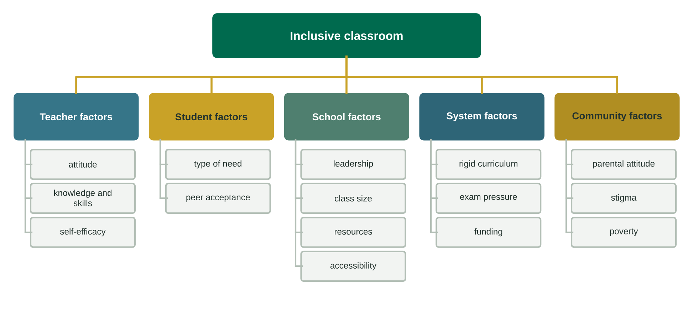
Figure 11. Factors influencing inclusion in the classroom
Common challenges in Bangladesh: large classes (often 60 or more students), negative attitudes and low expectations, inadequate pre-service and in-service training, inaccessible buildings and toilets, lack of assistive devices and accessible materials, a rigid, exam-oriented curriculum, limited specialist support, and weak coordination between the education and social welfare ministries.
4.2 Inclusive pedagogy
Inclusive pedagogy is an approach in which teachers extend what is ordinarily available to everyone, rather than providing different activities for "most" and "some" learners (Florian & Black-Hawkins, 2011). It rejects fixed-ability thinking and believes every child can learn.
Universal Design for Learning (UDL)
Developed by CAST (Rose & Meyer, 2002), UDL applies the architectural idea of universal design to curriculum: design from the start for the widest range of learners.
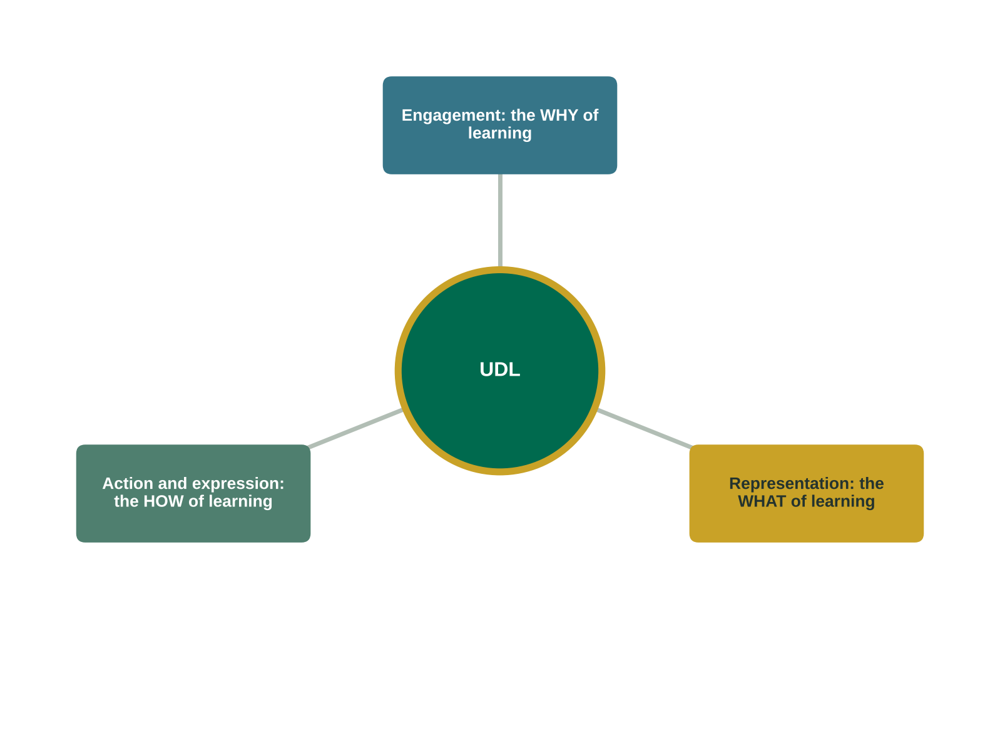
Figure 12. The three principles of Universal Design for Learning (CAST)
Differentiated instruction
Tomlinson (2001) describes differentiation of content (what learners learn), process (how they learn), product (how they show learning) and learning environment, according to learners' readiness, interests and learning profiles.
Other effective strategies
Cooperative learning and peer tutoring (e.g., think-pair-share, jigsaw, buddy system).
Multi-level teaching: one lesson with tasks at different levels.
Task analysis: breaking skills into small steps.
Multisensory teaching: seeing, hearing, touching and doing.
Scaffolding (Vygotsky's zone of proximal development).
Reasonable accommodations in assessment: extra time, a scribe or reader, Braille or large-print papers, oral tests, separate room.
4.3 Creating supportive learning environments
Physical: accessible seating, clear pathways, good lighting and acoustics, materials within reach, displays at eye level.
Social and emotional: warm relationships, a sense of belonging, anti-bullying rules, celebrating differences, buddy systems.
Instructional: clear routines and visual schedules, varied materials, high expectations, positive feedback.
4.4 Assistive devices for children with SEN
Assistive technology (AT) is any item, equipment or system used to increase, maintain or improve the functional capabilities of persons with disabilities.
| Disability | Low-tech devices | High-tech devices |
|---|---|---|
| Visual impairment | Braille slate and stylus, Perkins brailler, white cane, abacus (Taylor frame), tactile maps and diagrams, large-print books, magnifying glass, bold-line paper | Screen readers (NVDA, JAWS), DAISY talking books, refreshable Braille display, electronic magnifiers (CCTV), text-to-speech apps |
| Hearing impairment | Picture cards, sign language charts, flash cards, written instructions | Hearing aids, cochlear implants, FM and loop systems, captioning, video sign language |
| Physical disability | Wheelchairs, crutches, walkers, ramps, pencil grips, slant boards, adapted chairs and tables, page turners | Adapted keyboards, switches, eye-gaze systems, speech-recognition software |
| Intellectual disability and autism | Visual schedules, picture exchange (PECS), token boards, timers, concrete manipulatives | Communication apps, tablets with AAC software, educational games |
| Speech and communication | Communication boards and books | Speech-generating devices (AAC) |
| Learning disabilities | Coloured overlays, highlighters, number lines, graphic organisers | Audiobooks, spell-checkers, word prediction, text-to-speech |
Accessible digital textbooks (multimedia talking books) for visually impaired students have been developed in Bangladesh with a2i and partners, and Bangla Braille textbooks are distributed through government and NGO programmes. Check current availability with DPE and DSHE.
4.5 Effective classroom management for inclusive education
| Strategy | Practice |
|---|---|
| Clear expectations and routines | Few, positively stated rules; visual reminders; consistent routines |
| Positive behaviour support | Praise specific behaviour; token systems; focus on prevention rather than punishment |
| Seating arrangements | Flexible groups; children with visual or hearing needs near the teacher; avoid isolating any child |
| Proximity and movement | Circulate around the room; non-verbal cues |
| Structured transitions | Advance warnings and timers, particularly for children with autism |
| Functional behaviour assessment | Understand the ABC (antecedent–behaviour–consequence) of challenging behaviour and its purpose |
| Large-class strategies | Group work with roles, peer tutors, class monitors, choral responses, simple materials |
| Time management | Short varied activities; brain breaks |
| Positive teacher–student relationships | Know each learner's name, strengths and needs; be fair and consistent |
4.6 Addressing teacher burnout
Burnout is a psychological syndrome arising from prolonged work stress. Maslach and Jackson (1981) identify three dimensions:
Emotional exhaustion: feeling drained and overextended.
Depersonalisation (cynicism): detached, negative attitudes towards students.
Reduced personal accomplishment: feelings of incompetence and lack of achievement.
Causes in inclusive classrooms: large classes, lack of support and training, heavy workload and paperwork, behaviour challenges, low self-efficacy, isolation, and lack of recognition.
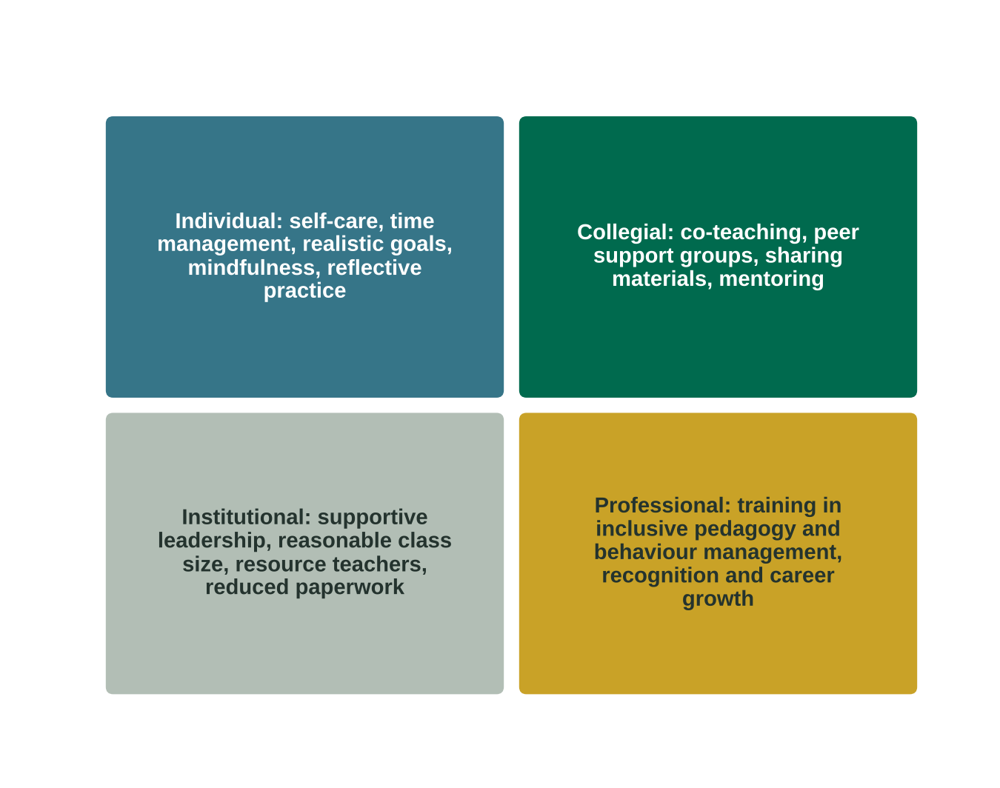
Figure 13. Strategies for preventing and addressing teacher burnout
4.7 Classroom communication strategies for educating CWDs
General: speak clearly and at a moderate pace; use simple language; check understanding; give instructions in more than one form (oral, written, visual, demonstration); allow extra response time; use the child's name; respect preferred communication methods.
With deaf and hard-of-hearing learners: face the class; do not speak while writing on the board; good lighting on your face; use Bangla Sign Language (Bangla Sign Language Day is observed on 7 February), gestures, finger spelling, written words and pictures; repeat other students' answers; caption videos.
With learners with visual impairment: say your name when approaching; describe visuals aloud; read board writing aloud; use tactile materials; orient the child to the classroom; avoid "this" and "there" without description.
With learners with intellectual disabilities: short, concrete sentences; one instruction at a time; demonstrations; repetition; visual cues.
With learners with autism: literal, clear language; visual supports; warn about changes; reduce sensory overload; give processing time.
Augmentative and alternative communication (AAC): picture boards, PECS (Bondy & Frost), symbols and speech-generating devices for learners with limited speech.
Respectful language: "a student with a hearing impairment", not "the deaf-mute boy"; avoid pity and labels.
Likely questions: "Discuss the challenges of inclusive classrooms in Bangladesh." "What is Universal Design for Learning?" "Describe assistive devices for learners with visual and hearing impairments." "Explain the causes of teacher burnout and suggest remedies." "What communication strategies would you use with deaf learners in a regular classroom?"
Unit 5: Transforming Schools for Inclusive Education
Chapter summary
UNESCO's Embracing Diversity: Toolkit for Creating Inclusive, Learning-Friendly Environments (UNESCO Bangkok, 2004) defines an ILFE as one that welcomes, nurtures and educates all children regardless of their gender or physical, intellectual, social, emotional, linguistic or other characteristics. The toolkit has six booklets:
This chapter covers: Creating an Inclusive Learning-Friendly Environment (ILFE); Accessibility for diverse learners: getting school buildings right; Strategies for using technology to support inclusion; Collaborative strategies for effective inclusion; The four indicators of inclusion; Involving parents and community in transforming schools; Government and non-government initiatives in Bangladesh; Inclusion in emergencies.
5.1 Creating an Inclusive Learning-Friendly Environment (ILFE)
UNESCO's Embracing Diversity: Toolkit for Creating Inclusive, Learning-Friendly Environments (UNESCO Bangkok, 2004) defines an ILFE as one that welcomes, nurtures and educates all children regardless of their gender or physical, intellectual, social, emotional, linguistic or other characteristics. The toolkit has six booklets:
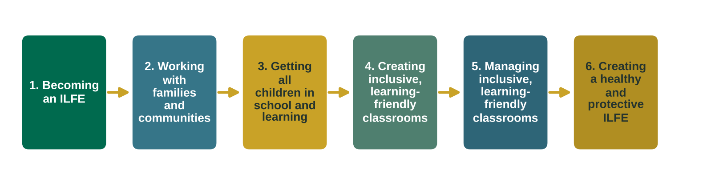
Figure 14. The six booklets of UNESCO's ILFE Toolkit (2004)
| ILFE characteristic | What it looks like |
|---|---|
| Inclusive | All children are enrolled, attend and participate, including CWDs, girls, ethnic minorities and poor children |
| Child-centred and active learning | Children learn by doing, group work, discussion, play |
| Gender-sensitive | Equal opportunities and safe facilities for girls and boys |
| Healthy and protective | Safe water, toilets, nutrition, no corporal punishment, protection from abuse |
| Family and community involvement | Parents and communities participate in school life |
| Teachers as facilitators | Teachers are supported, trained and reflective |
5.2 Accessibility for diverse learners: getting school buildings right
Accessibility follows the principles of universal design: equitable use, flexibility, simple and intuitive use, perceptible information, tolerance for error, low physical effort, and appropriate size and space (Center for Universal Design, 1997).
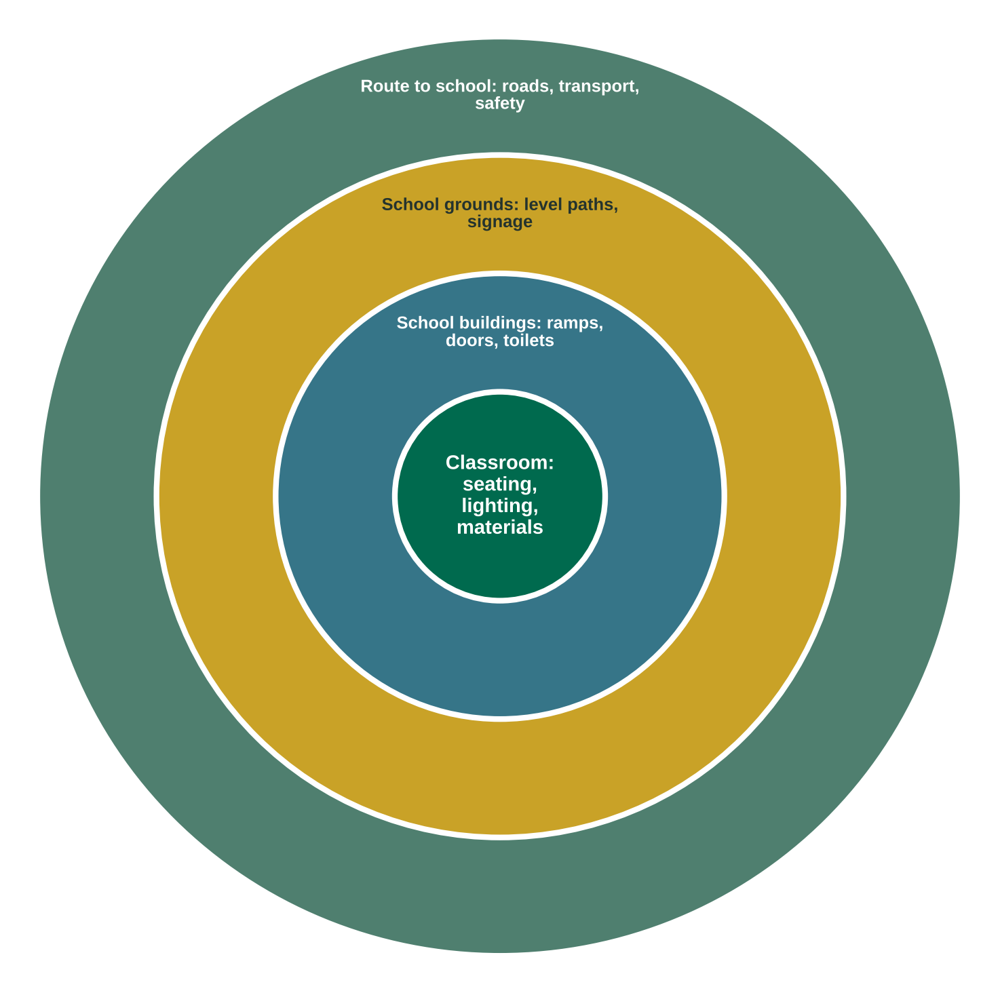
Figure 15. The accessibility chain: every link from home to classroom must be accessible
Ramps with a gentle slope (about 1:12) and handrails; level entrances.
Doors at least 900 mm wide; lever handles.
Accessible toilets with grab bars and space for wheelchair turning; separate toilets for girls with menstrual hygiene facilities.
Classrooms on the ground floor when lifts are absent; adequate lighting; good acoustics; tactile flooring and colour contrast for visually impaired learners.
Signage in large print, Braille and pictures; safe water points at accessible height.
Information accessibility: accessible textbooks, websites and notices.
5.3 Strategies for using technology to support inclusion
Assistive technology matched to individual needs (see 4.4).
Accessible digital content: multimedia talking books, captioned videos, e-books with text-to-speech.
ICT in classrooms: multimedia classrooms and digital content (see PC 114), used with UDL principles.
Communication and AAC apps; sign language video dictionaries.
Online and blended learning that is accessible (screen reader compatible, captions, low bandwidth).
Data systems to identify and track CWDs (disability-disaggregated data in the Annual Primary School Census).
Caution: technology must be affordable, maintained, and accompanied by teacher training; it supplements, but does not replace, good teaching.
5.4 Collaborative strategies for effective inclusion
| Strategy | Description |
|---|---|
| Co-teaching (Friend & Cook) | Two teachers (general and special/resource) share a class: one teach–one assist, station teaching, parallel teaching, alternative teaching, team teaching |
| Resource teacher or itinerant teacher | Supports several schools; adapts materials; teaches Braille or sign language; advises teachers |
| School-based support team | Head teacher, teachers, resource person, parents: identify needs, prepare IEPs, monitor progress |
| Peer support | Peer tutoring, buddy systems, circles of friends |
| Multi-disciplinary collaboration | Teachers work with therapists (physiotherapy, speech therapy), doctors, social workers |
| Cluster and school networks | Schools share resources and good practice; special schools act as resource centres for mainstream schools |
| Professional learning communities | Teachers reflect together and solve problems |
5.5 The four indicators of inclusion
Inclusion can be monitored through four indicators, often called the 4 As, widely used in Bangladeshi inclusive education training materials:
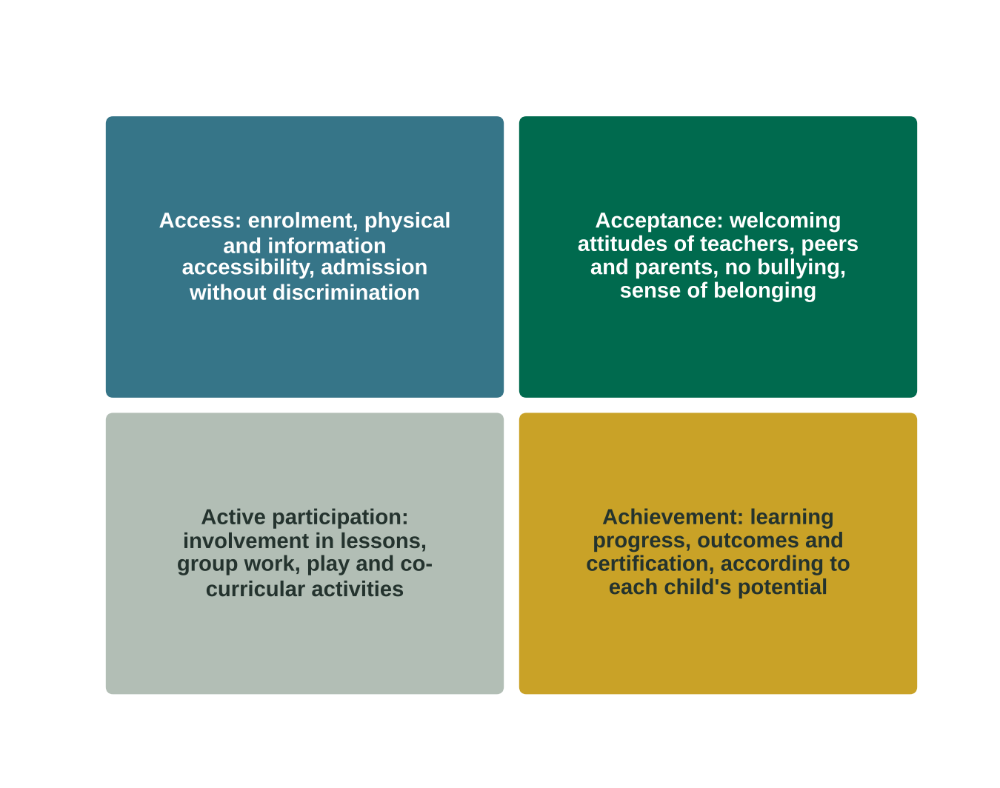
Figure 16. The four indicators of inclusion
| Indicator | Guiding question | Example evidence |
|---|---|---|
| Access | Are all children in the catchment area enrolled and able to reach and enter the school and its information? | Enrolment of CWDs; ramps; accessible textbooks; no admission refusal |
| Acceptance | Are all learners welcomed and valued by teachers, peers and community? | Attitude surveys; friendships; no bullying; respectful language |
| Active participation | Do all learners take part fully in learning and school life? | Observation of participation in lessons, group work, sports and cultural events |
| Achievement | Are all learners progressing and achieving their potential? | Continuous assessment records; IEP goal attainment; completion and transition rates |
Remember the sequence: a child must first get in (access), be welcomed (acceptance), take part (participation) and learn (achievement). Presence alone is not inclusion.
5.6 Involving parents and community in transforming schools
Parents as partners: share information about the child's strengths and needs; participate in IEP meetings; support learning at home; join SMCs and PTAs.
Awareness campaigns to reduce stigma (courtyard meetings, school events, observance of International Day of Persons with Disabilities on 3 December and World Autism Awareness Day on 2 April).
Community-based rehabilitation (CBR): community workers identify children with disabilities, link them to services and support enrolment.
School Management Committees (SMCs) and local government (Union Parishad) can mobilise resources for ramps, toilets and transport.
Disabled Persons' Organisations (DPOs) and parent associations advocate for rights.
Role models: inviting successful persons with disabilities to speak in schools.
5.7 Government and non-government initiatives in Bangladesh
| Initiative | Contribution to inclusive education |
|---|---|
| PEDP II (2004–2011) | Introduced inclusive education as a cross-cutting theme covering girls, children with disabilities, ethnic minorities and other disadvantaged children; teacher training and accessibility improvements |
| PEDP 3 (2011–2016/17) | Mainstreamed inclusive education; screening of children; provision of assistive devices; ramps and accessible toilets; inclusive education in teacher training |
| PEDP 4 (2018–2023, extended) | Equity and inclusion: disability-disaggregated data, accessible infrastructure, inclusive education strategy, teacher training. Check the status of the current programme (PEDP 5 or successor) |
| TQI-SEP (Teaching Quality Improvement in Secondary Education Project) | Improved secondary teacher training; included inclusive education and gender modules in teacher education (CinEd/B.Ed); infrastructure in teacher training colleges |
| SESIP (Secondary Education Sector Investment Program, ADB) | Supported secondary education reforms in curriculum, assessment, teacher development and equity, including access for disadvantaged groups |
| ROSC (Reaching Out-of-School Children) | Ananda schools (learning centres) for out-of-school and dropout children, with stipends, flexible schedules and multigrade teaching, reaching marginalised children; later urban and skills components |
| Integrated Education Programme (Department of Social Services) | Resource teachers and hostels for visually impaired students in regular secondary schools |
| Disability stipend and allowance | Education stipend for students with disabilities at different levels |
| Accessible textbooks | Braille textbooks and multimedia talking books for visually impaired learners |
Non-government initiatives: BRAC (inclusion of children with disabilities in BRAC schools), Centre for Disability in Development (CDD), Humanity and Inclusion (Handicap International), Sightsavers, Plan International, Save the Children, the Centre for the Rehabilitation of the Paralysed (CRP), the Society for the Welfare of the Intellectually Disabled (SWID Bangladesh), Autism Welfare Foundation, Proyash, and many DPOs and parents' organisations.
Programme names, dates and components change frequently. When teaching or writing an exam answer, give the principle (what the programme did for inclusion) and check current official sources (DPE, DSHE, MoPME, MoE, DSS) for the latest details.
5.8 Inclusion in emergencies
Emergencies (floods, cyclones, river erosion, conflict, pandemics, displacement) hit children with disabilities, girls and the poorest hardest: they are more likely to be left behind in evacuation, lose assistive devices, be excluded from temporary learning spaces and drop out permanently.
The INEE Minimum Standards for Education: Preparedness, Response, Recovery (Inter-Agency Network for Education in Emergencies) require that education in emergencies is accessible, safe, protective and inclusive.
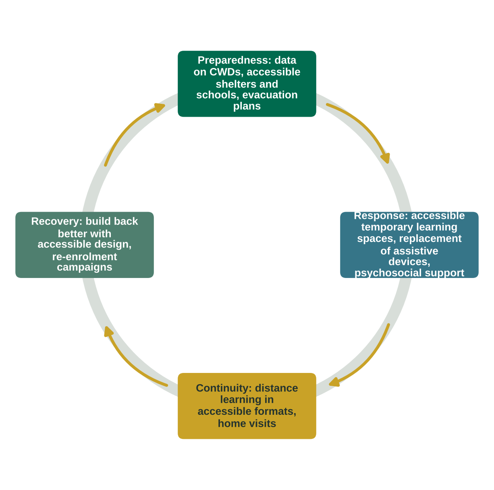
Figure 17. Disability-inclusive education in emergencies
Practical strategies:
Include children with disabilities in school disaster management plans and drills (see PC 123).
Ensure cyclone shelters used as schools have ramps and accessible toilets.
Provide information in accessible formats (sign language, pictures, audio).
Train teachers in psychosocial support and inclusive teaching in temporary settings.
During school closures (as in COVID-19), provide accessible remote learning and check on CWDs.
In the Rohingya humanitarian response in Cox's Bazar, learning centres have sought to include children with disabilities through identification, referral and teacher training.
Likely questions: "What is ILFE? Describe its characteristics and the strategies for creating it." "Explain the four indicators of inclusion with examples." "How can parents and the community help to transform schools for inclusion?" "Discuss government and non-government initiatives for inclusive education in Bangladesh." "How can inclusion be ensured in emergencies?"
Reading List
Recommended in the curriculum
Books, journals and reports listed in the official course curriculum, as given there.
- Adams, M., Blumenfield, W., Castaneda, C., Hackman, H., Peters, M., & Zuniga, X. (Eds.). (2013). Readings for Diversity and Social Justice. New York: Routledge.
- Adams, M., Lee, A. B., & Griffin, P. (2007). Teaching for diversity and social justice. New York: Rouledge.
- Alston, P. & Knuckey, S. (2016). The Transformation of Human Rights Fact-Finding. Oxford, UK: Oxford University.
- Ball, A. (2006). Multicultural Strategies for Education and Social Change: Carriers of the Torch in the United States and South Africa. New York: Teachers College.
- Banks, J. (2005). Cultural Diversity and Education: Foundations, Curriculum, and Teaching. Michigan: Pearson.
- Banks, J. A. & Banks, M. (2015). Multicultural Education: Issues and Perspectives (9th ed.). New York: Willey.
- Cochrane, S., Jones, M., Chhabra, M., & Spragg, D. T. (2017). Culturally Responsive Teaching and Reflection in Higher Education. New York: Routledge.
- Cole, M. (2000). Education, Equality, and Human Rights. Citi Bank, UK: Falmer Press.
- Cose, E. (1994). The Rage of a Privileged Class: Why Are Middle-Class Blacks Angry? Why Should America Care? New York: Harper Perennial.
- Erevelles, N. (2011). Disability and difference in global contexts: Enabling a transformative body politic. Berlin, Germany: Springer.
- Haider, M. S., & Ferdous. J., (2019). A review of inclusive education contents included in teacher education courses: Bangladeshi context, International Journal of Science and Research (IJSR), Volume 8 Issue 9, September 2019, 175- 181.
- Hammond, Z. (2015). Culturally Responsive Teaching and the Brain: Promoting Authentic Engagement and Rigor Among Culturally and Linguistically Diverse Students. Thousands Oak, CA: Corwin.
- Powell, R.G, & Powell, D. (2015). Classroom Communication and Diversity: Enhancing Instructional Practice. Mahawah, NJ: Lawrence Erlbaum.
- Smith, P. (2013). Disability and Diversity: An Introduction (1st Edn.). Dubuqul, LO; Kendall/Hunt.
- Sen, A. (2009). The Idea of Justice. :dravraH Allen Lane,dravraHUniveasiti.
- Williams, D. (2013). Strategic Diversity Leadership: Activating Change and Transformation in Higher Education. New York: Stylus Publishing.
- এম. তারিক আহসান ও অন্যান্য (২০১৭), নিঃশব্দ ভাব বিনিময়, ঢাকা: এসিআইই।
- দিবা হোসেন ও মো: শাহরিয়ার হায়দার (২০০৯), দৃষ্টি প্রতিবন্ধিতা ও শিক্ষা, ঢাকা: চাইল্ড সাইট ফাউন্ডেশন।
- দিবা হোসেন, মো: শাহরিয়ার হায়দার ও রায়হান আরা জামান (২০২১), প্রতিবন্ধিতা শব্দকোষ, ঢাকা: বাংলা একাডেমী।
- দিবা হোসেন ও রায়হান আরা জামান (২০২০), একীভুত শিক্ষায় তথ্য ও যোগযোগ প্রযুক্তি, ঢাকা: Grants for Advanced Research in Education (GARE), শিক্ষা মন্ত্রণালয়, বাংলাদেশ সরকার।
- নিরাফাত আনাম, এম তারিক আহসান ও নাসিমা আক্তার (২০১১), শ্রবণ প্রতিবন্ধিতা: কারণ, প্রতিকার ও উন্নয়ন সহায়তা, ঢাকা: সিএসআইডি।
- মুহাম্মদ মাহবুবুর রহমান (সম্পাদিত) (২০১৯), একীভূত শিক্ষা, ঢাকা: শিক্ষা মন্ত্রণালয়, টিকিউআই-২।
- মোঃ শাহরিয়ার হায়দার ও জান্নাতুল ফেরদৌস (২০২১), বিশেষ চাহিদাসম্পন্ন শিশুর ব্যবস্থাপনা, ঢাকা: বিশ্ব সাহিত্য ভবন Web sources: Various Policies and Legislation.
- World Confernce on Special Needs Education: Access and Quality [Salamanca Declaration]1994. United Nation Convention on Rights for peoples with disabilities (UNCRPD) 2006.
- UNESCO-Dhaka Booklet on Inclusive Education (in Bangla).
- UNESCO (2001), Open File on Inclusive Education: Support Materials for managers and administrators. Paris: UNESCO..
- UNESCO (1993). Teachers Education Resource Pack: Special Needs in the classroom. Paris: UNESCO.
- www.bdlaw.gov.bd.
- www.mosw.gov.bd.
Widely read books worldwide on this subject
Well-known international texts that go well with this course.
- Ainscow, M., Booth, T., & Dyson, A. (2006). Improving Schools, Developing Inclusion. Routledge.
- Booth, T., & Ainscow, M. (2011). Index for Inclusion (3rd ed.). CSIE.
- Florian, L. (Ed.). (2014). The SAGE Handbook of Special Education (2nd ed.). Sage.
- Mitchell, D. (2014). What Really Works in Special and Inclusive Education (2nd ed.). Routledge.
- Slee, R. (2011). The Irregular School: Exclusion, Schooling and Inclusive Education. Routledge.
- Meyer, A., Rose, D. H., & Gordon, D. (2014). Universal Design for Learning: Theory and Practice. CAST.
- UNESCO. (1994). The Salamanca Statement and Framework for Action on Special Needs Education. UNESCO.
Exam Preparation Bank
A. Multiple-choice questions
1. The 3 Rs of diversity are:
(a) Read, Write, Reckon (b) Recognize, Respect, Respond (c) Reduce, Reuse, Recycle (d) Rights, Resources, Responsibility
Show answer
Answer: (b)
2. The social model of disability locates the problem in:
(a) the individual's impairment (b) barriers in society (c) medical diagnosis (d) the family
Show answer
Answer: (b)
3. The ICF was published by the WHO in:
(a) 1980 (b) 1994 (c) 2001 (d) 2006
Show answer
Answer: (c)
4. The Salamanca Statement was adopted in:
(a) 1990 (b) 1994 (c) 2000 (d) 2006
Show answer
Answer: (b)
5. The World Conference on Special Needs Education (1994) was held in:
(a) Jomtien (b) Dakar (c) Salamanca (d) Incheon
Show answer
Answer: (c)
6. Which Article of the UN CRPD deals with education?
(a) Article 9 (b) Article 19 (c) Article 24 (d) Article 28
Show answer
Answer: (c)
7. Bangladesh ratified the UN CRPD in:
(a) 2001 (b) 2007 (c) 2013 (d) 2015
Show answer
Answer: (b)
8. The SDG target that specifically addresses equal access for persons with disabilities in education is:
(a) 4.1 (b) 4.5 (c) 4.7 (d) 4.c
Show answer
Answer: (b)
9. How many types of disability are recognised in Bangladesh's Rights and Protection of Persons with Disabilities Act 2013?
(a) 8 (b) 10 (c) 12 (d) 14
Show answer
Answer: (c)
10. Which is NOT a neuro-developmental disability under the NDD Trust Act 2013?
(a) autism (b) Down syndrome (c) cerebral palsy (d) visual impairment
Show answer
Answer: (d)
11. "Presence, participation and achievement" are elements of inclusion identified by:
(a) Ainscow (b) Deno (c) Oliver (d) Rawls
Show answer
Answer: (a)
12. The Index for Inclusion was developed by:
(a) Booth and Ainscow (b) Maslach and Jackson (c) Rose and Meyer (d) Friend and Cook
Show answer
Answer: (a)
13. The capability approach to justice is associated with:
(a) John Rawls (b) Amartya Sen (c) Nancy Fraser (d) Paulo Freire
Show answer
Answer: (b)
14. Placing children with disabilities in regular schools without changing the school is:
(a) inclusion (b) integration (c) segregation (d) exclusion
Show answer
Answer: (b)
15. Non-disabled children joining a programme designed for children with disabilities is:
(a) full inclusion (b) partial inclusion (c) reverse inclusion (d) vocational inclusion
Show answer
Answer: (c)
16. The cascade (continuum) of placement was proposed by:
(a) Evelyn Deno (b) Mike Oliver (c) Carol Tomlinson (d) Mel Ainscow
Show answer
Answer: (a)
17. Universal Design for Learning was developed by:
(a) CAST (b) UNICEF (c) WHO (d) INEE
Show answer
Answer: (a)
18. The three principles of UDL include multiple means of engagement, representation and:
(a) assessment (b) action and expression (c) inclusion (d) accommodation
Show answer
Answer: (b)
19. Which is NOT a dimension of burnout according to Maslach?
(a) emotional exhaustion (b) depersonalisation (c) reduced personal accomplishment (d) high self-efficacy
Show answer
Answer: (d)
20. A Perkins brailler is an assistive device for learners with:
(a) hearing impairment (b) visual impairment (c) physical disability (d) dyscalculia
Show answer
Answer: (b)
21. PECS is mainly used with learners who have:
(a) low vision (b) limited speech or autism (c) mild hearing loss (d) giftedness
Show answer
Answer: (b)
22. The four indicators of inclusion are Access, Acceptance, Active participation and:
(a) Assessment (b) Achievement (c) Attendance (d) Accommodation
Show answer
Answer: (b)
23. The ILFE Toolkit "Embracing Diversity" was published by:
(a) UNESCO Bangkok (b) World Bank (c) ADB (d) BRAC
Show answer
Answer: (a)
24. Ananda schools were established under:
(a) PEDP II (b) ROSC (c) TQI-SEP (d) SESIP
Show answer
Answer: (b)
25. Bangla Sign Language Day is observed on:
(a) 21 February (b) 7 February (c) 3 December (d) 2 April
Show answer
Answer: (b)
26. International Day of Persons with Disabilities is observed on:
(a) 2 April (b) 3 December (c) 10 December (d) 8 March
Show answer
Answer: (b)
27. Minimum standards for education in emergencies are set by:
(a) INEE (b) UNHCR only (c) WHO (d) ILO
Show answer
Answer: (a)
B. Short questions
Q1. Define diversity. Why is diversity a strength in the classroom?
Q2. Distinguish between impairment and disability.
Q3. Distinguish between the medical model and the social model of disability.
Q4. What are the 3 Rs of diversity?
Q5. Distinguish between equality and equity with an example.
Q6. What is reasonable accommodation?
Q7. Write the key message of the Salamanca Statement.
Q8. State the main provisions of Article 24 of the UN CRPD.
Q9. Name the 12 types of disability recognised by the 2013 Act.
Q10. What is an Individualised Education Plan (IEP)?
Q11. Distinguish between integrated and inclusive education.
Q12. What is home-based education? For whom is it suitable?
Q13. What is the least restrictive environment?
Q14. What is Universal Design for Learning?
Q15. Mention five assistive devices for learners with visual impairment.
Q16. What is co-teaching? Name its models.
Q17. State the four indicators of inclusion.
Q18. What is ILFE?
C. Broad questions
Q19. Discuss the concept of human diversity and disability. Explain the implications of the 3 Rs of diversity for educating children with disabilities.
Q20. Compare the major models of disability and show how the shift from the medical to the social model has changed education.
Q21. Explain inclusive education from the perspective of social justice, referring to Rawls, Sen and Fraser.
Q22. Critically discuss the international and national legal and policy framework for inclusive education in Bangladesh.
Q23. Who are children with special educational needs? Describe the characteristics of children with visual, hearing and intellectual disabilities and suggest classroom strategies for each.
Q24. Compare special, integrated and inclusive education. Explain the different forms of inclusion and the continuum of placement.
Q25. What are the factors and challenges of inclusive classrooms in Bangladesh? Suggest strategies for effective inclusive pedagogy.
Q26. Describe classroom management and communication strategies for educating children with disabilities in regular classrooms. How can teacher burnout be prevented?
Q27. What is an Inclusive Learning-Friendly Environment? Describe the strategies for transforming a school into an ILFE, including accessibility, technology and collaboration.
Q28. Explain the four indicators of inclusion. How would you use them to evaluate the inclusiveness of a school?
Q29. Discuss government and non-government initiatives for inclusive education in Bangladesh and suggest ways to strengthen them.
Q30. How can education for children with disabilities be ensured during emergencies such as floods, cyclones and pandemics?
References
Ainscow, M. (2005). Developing inclusive education systems: What are the levers for change? Journal of Educational Change, 6(2), 109–124.
Ainscow, M., Booth, T., & Dyson, A. (2006). Improving schools, developing inclusion. Routledge.
Banks, J. A., & Banks, C. A. M. (Eds.). (2015). Multicultural education: Issues and perspectives (9th ed.). Wiley.
Booth, T., & Ainscow, M. (2002). Index for inclusion: Developing learning and participation in schools. Centre for Studies on Inclusive Education.
CAST. (2018). Universal design for learning guidelines version 2.2. CAST.
Deno, E. (1970). Special education as developmental capital. Exceptional Children, 37(3), 229–237.
Florian, L., & Black-Hawkins, K. (2011). Exploring inclusive pedagogy. British Educational Research Journal, 37(5), 813–828.
Fraser, N. (2008). Scales of justice: Reimagining political space in a globalizing world. Polity Press.
Friend, M., & Cook, L. (2017). Interactions: Collaboration skills for school professionals (8th ed.). Pearson.
Government of Bangladesh. (2013). Rights and protection of persons with disabilities act 2013. Ministry of Social Welfare.
Government of Bangladesh. (2013). Neuro-developmental disability protection trust act 2013. Ministry of Social Welfare.
Government of Bangladesh. (2014). Non-formal education act 2014. Ministry of Primary and Mass Education.
Hammond, Z. (2015). Culturally responsive teaching and the brain. Corwin.
INEE. (2010). Minimum standards for education: Preparedness, response, recovery. Inter-Agency Network for Education in Emergencies.
Maslach, C., & Jackson, S. E. (1981). The measurement of experienced burnout. Journal of Occupational Behaviour, 2(2), 99–113.
Ministry of Education. (2010). National education policy 2010. Government of the People's Republic of Bangladesh.
Nussbaum, M. C. (2006). Frontiers of justice: Disability, nationality, species membership. Harvard University Press.
Oliver, M. (1990). The politics of disablement. Macmillan.
Rawls, J. (1971). A theory of justice. Harvard University Press.
Rose, D. H., & Meyer, A. (2002). Teaching every student in the digital age: Universal design for learning. ASCD.
Sen, A. (2009). The idea of justice. Allen Lane.
Smith, P. (2013). Disability and diversity: An introduction. Kendall Hunt.
Tomlinson, C. A. (2001). How to differentiate instruction in mixed-ability classrooms (2nd ed.). ASCD.
UNESCO. (1994). The Salamanca statement and framework for action on special needs education. UNESCO.
UNESCO. (2004). Embracing diversity: Toolkit for creating inclusive, learning-friendly environments. UNESCO Asia and Pacific Regional Bureau for Education.
UNESCO. (2005). Guidelines for inclusion: Ensuring access to education for all. UNESCO.
UNESCO. (2009). Policy guidelines on inclusion in education. UNESCO.
UNESCO. (2017). A guide for ensuring inclusion and equity in education. UNESCO.
UNESCO. (2020). Global education monitoring report 2020: Inclusion and education: All means all. UNESCO.
UNICEF. (2021). Seen, counted, included: Using data to shed light on the well-being of children with disabilities. UNICEF.
United Nations. (2006). Convention on the rights of persons with disabilities. United Nations.
United Nations Committee on the Rights of Persons with Disabilities. (2016). General comment No. 4 (2016) on the right to inclusive education. United Nations.
World Health Organization. (2001). International classification of functioning, disability and health. WHO.
World Health Organization. (2022). Global report on health equity for persons with disabilities. WHO.